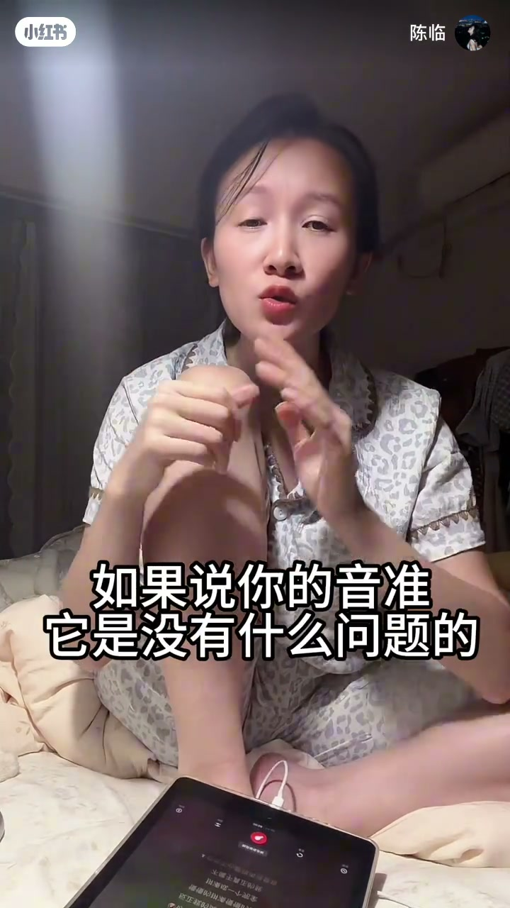

内容要点
「陈临」用《夜夜夜夜》教慢歌进拍：听前奏钢琴双音，响后数三下（2-3-4）再开口；副歌入口也可在尾音结束后数三下卡准。若前奏只有钢琴/弦乐且拍子极不稳定，音准没问题就可以自由拍、拖拍或抢拍，感受流动。最后上升到翻唱态度：不必与原唱一模一样，唱歌不等于只为被夸。
知识结构
钢琴两音一响 → 数 2-3-4 → 开口唱。
尾音结束后再数三下，同样能卡准。
拍子不稳的慢歌可拖/抢一点，感受弦乐钢琴流动。
故意不完全跟原唱；想唱就唱，别把价值绑在别人夸你。
慢歌进拍先抓「信号音+数拍」；信号不稳时，用音乐感自由拍比死磕节拍器更重要。
00:00-02:35钢琴双音后数三下
针对「慢歌不知道怎么进拍」：先听伴奏里两个钢琴音，再听一遍确认。这两个音一响，数三下 2-3-4，再开始唱；从第一个钢琴处起数。多次用「咚咚」示意后，接「安静的夜夜空里…你也不必虔诚再说爱人」。
很多人卡在跟拍。方法再简化：最后一个钢琴尾音结束后数三下就开口。拉到副歌入口不看词演示，数三下后「你也不必虔诚再说爱我」——卡准了。
02:35-04:51不稳定慢歌与翻唱态度
另一类情况：前面只有钢琴或弦乐，拍子极不稳定，不是固定柱式和弦。很多人就不会唱了。若音准没问题，可以自由拍一点，不必完全按死节拍，偶尔拖拍、抢拍也无伤大雅，去感受流动。
她示范注入个人处理的演唱，并预告会被说「跟原唱不对」——她承认是故意的：要听一模一样听原唱；翻唱该有自己的感情。收束：唱歌就只是唱歌；若只为别人夸你好听，想要的是夸奖而不是歌本身。想唱就唱，大胆开麦。

完整转录（112段）
以下文本由 Whisper medium 模型自动转录，可能存在少量识别误差，已尽可能修正。
这个慢格不知道怎么进拍是不是
来 夜夜夜夜
来听伴奏
听到刚刚这两个钢琴音了没有
来 再听一遍
这两个音一响了之后
然后数三下
2 3 4 你就开始唱
从第一个钢琴那里开始数啊
你听
咚咚
2 3 4
咚咚咚咚听到没有
咚咚咚咚这钢琴声听到没有
咚咚
咚咚
咚咚
咚咚
咚咚
咚咚
安静的夜夜空里
听钢琴
你也不必虔诚再说爱人
很多人在这里他不知道怎么跟是不是
夜夜空里
听着钢琴声
二三
你也不必虔诚再说爱人
数三下
再来一遍
夜夜空里
二三
你也不必虔诚再说爱人
懂了没有
懂了没有
那个最后一个钢琴的尾音
结束了之后数三下
你就开始唱
好了我们直接拉到这儿啊
我不看词
你们看啊
你听这个钢琴声
结束了那个音之后数三下啊
二三
你也不必虔诚再说爱我
卡准了吧
是不是卡准了
你数三下
数三下你也能卡准
然后啊
还有一个情况
我要跟大家说一下就是
就是唱慢歌
前面只有钢琴或弦乐的这种慢歌
而且它的拍子极其不稳定
它不是那种注视和弦啊
有固定的节拍
它像这样子
然后突然
像这种情况
是不是很多人就不知道怎么唱了
如果说你的音准
它是没有什么问题的
那么这个时候呢
我们可以自由拍一点
你自由拍一点
不要完全去按这个节拍走
咱们有时候也可以拖一下拍
抢一下拍
没事的
无关大雅的
感受这个弦乐啊
钢琴的流动
你在哪里
我想问问我自己
一开始我聪明
结束我聪明聪明的
几乎都回到了我自己
想问天问他地
我只是迷心问
我聪明
好这个时候肯定会有人说我
你唱的不对啊
你唱的跟原唱不对啊
是是不对
我故意的
如果要听跟原唱一模一样的
听原唱就好了呀
为什么要听我唱
我翻唱肯定是我
我啊我唱我翻唱啊
你注入你自己的感情进去
没错吧
唱歌就只是唱歌啊
如果你是为了别人夸你唱歌好听
你才去唱歌
那你想要的是别人夸你
我夸你
你不管唱的什么样都好听
我喜欢你
可以吗
唱歌就只是唱歌
我怎么能说出这么有哲学的话
该死我这无处安放的内力
所以你想唱就唱
想让别人夸你就让别人夸你
不要把唱歌这件事情建立在
建立在让别人夸你
OK
所以你不管唱的什么样
又有什么关系呢
大胆开麦